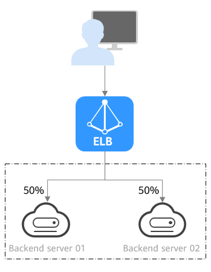
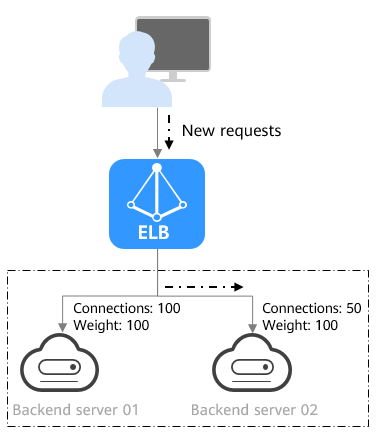
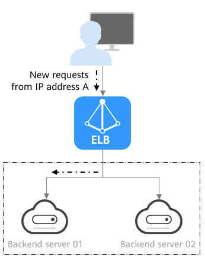

How ELB Works
To balance the load of your applications, create a load balancer to receive requests from clients and route the requests to backend servers in one or more AZs. Add at least a listener to the load balancer and associate at least a backend server with it. The load balancing algorithm you select when you add the listener determines how requests are distributed.
Load Balancing Algorithms
Shared load balancers and dedicated load balancers support the following load balancing algorithms:
- Weighted round robin: Requests are routed to different servers based on their weights, which indicate server processing performance. Backend servers with higher weights receive proportionately more requests, whereas equal-weighted servers receive the same number of requests. This algorithm is often used for short connections, such as HTTP connections.
The following figure shows an example of how requests are distributed using the weighted round robin algorithm. Two backend servers are in the same AZ and have the same weight, and each server receives the same proportion of requests.
Figure 1 Traffic distribution using the weighted round robin algorithm

- Weighted least connections: In addition to the weight assigned to each server, the number of connections processed by each backend server is also considered. Requests are routed to the server with the lowest connections-to-weight ratio. In addition to the number of connections, each server is assigned a weight based on its capacity. Requests are routed to the server with the lowest connections-to-weight ratio. This algorithm is often used for persistent connections, such as connections to a database.
The following figure shows an example of how requests are distributed using the weighted least connections algorithm. Two backend servers are in the same AZ and have the same weight, 100 connections have been established with backend server 01, and 50 connections have been connected with backend server 02. New requests are preferentially routed to backend server 02.
Figure 2 Traffic distribution using the weighted least connections algorithm

- Source IP hash: The source IP address of each request is calculated using the consistent hashing algorithm to obtain a unique hashing key, and all backend servers are numbered. The generated key is used to allocate the client to a particular server. This allows requests from different clients to be routed based on source IP addresses and ensures that a client is directed to the same server that it was using previously. This algorithm works well for TCP connections of load balancers that do not use cookies.
The following figure shows an example of how requests are distributed using the source IP hash algorithm. Two backend servers are in the same AZ and have the same weight. If backend server 01 has processed a request from IP address A, the load balancer will route new requests from IP address A to backend server 01.
Figure 3 Traffic distribution using the source IP hash algorithm

Classic load balancers support the following load balancing algorithms:- Round robin: Requests are distributed sequentially, evenly across all servers. This algorithm is often used for short connections, such as HTTP connections.
- Least connections: Requests are preferentially routed to backend servers with the minimum number of active connections. This algorithm is often used for persistent connections, such as connections to a database.
- Source IP hash: The source IP address of each request is calculated using the consistent hashing algorithm to obtain a unique hashing key, and all backend servers are numbered. The generated key is used to allocate the client to a particular server. This allows requests from different clients to be routed based on source IP addresses and ensures that a client is directed to the same server that it was using previously. This algorithm works well for TCP connections of load balancers that do not use cookies.

Classic load balancers can no longer be created on the management console. Use shared load balancers or dedicated load balancers instead.
Parent topic: Service Overview